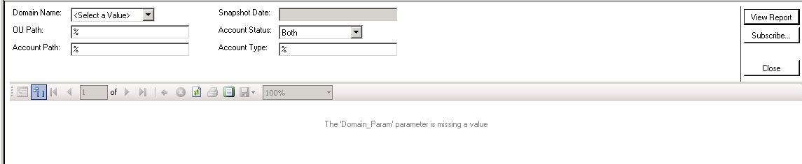

You are getting the following warning during AD snapshot report generation:

It can happen if the snapshot reporting feature is disabled and/or no AD snapshots were uploaded to the database.
In order to fix this issue please open the Newrix Auditor and make sure that snapshot reporting feature is enabled under Active Directory | Reports | Snapshot Reports (State-in-Time Reports) tab. Otherwise, on the same page you can import the snapshot you want to report on to the database. In order to do this, transfer the snapshot from the "All available snapshots" to the SNapshots available for reporting" column and then click the "Apply" button.
It can happen if the snapshot reporting feature is disabled and/or no AD snapshots were uploaded to the database.
In order to fix this issue please open the Newrix Auditor and make sure that snapshot reporting feature is enabled under Active Directory | Reports | Snapshot Reports (State-in-Time Reports) tab. Otherwise, on the same page you can import the snapshot you want to report on to the database. In order to do this, transfer the snapshot from the "All available snapshots" to the SNapshots available for reporting" column and then click the "Apply" button.